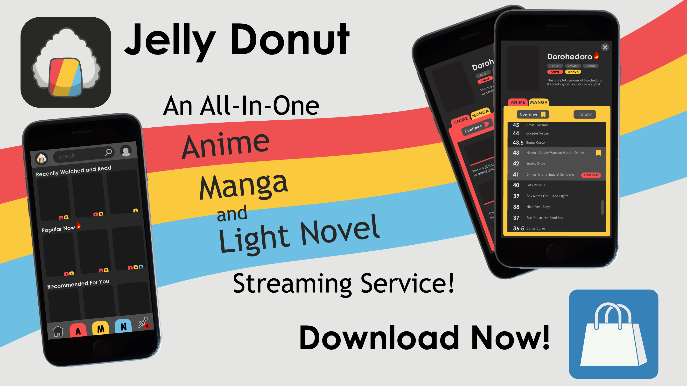
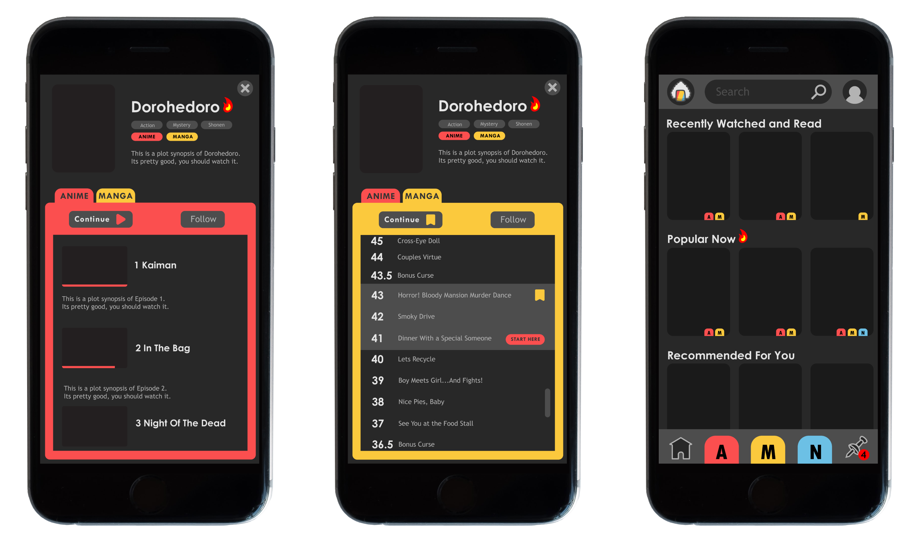
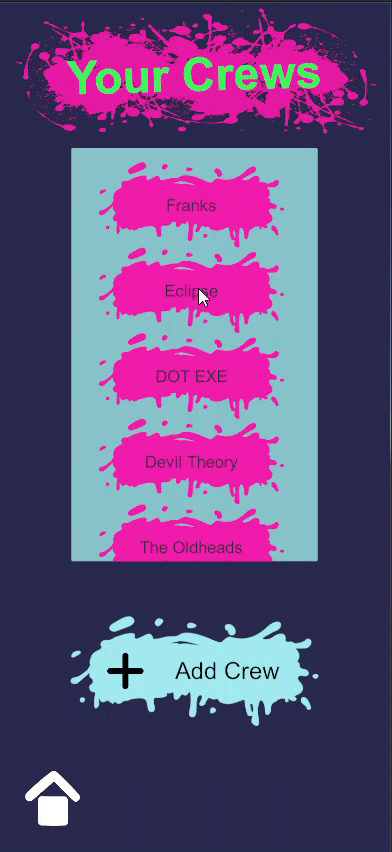
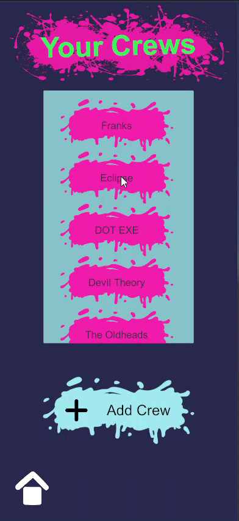

Jelly Donut
• Graphic Design
• UI/UX Design
• Adobe Illustrator
• Adobe Photoshop

Prototype for an Anime, Manga, and Light Novel streaming service.
It is a very common industry practice for Anime productions to be a direct adaptation of Manga or Light Novels (Short Books) or in some cases Manga or LN from Anime.
Jelly Donut would function in a similar manner to a streaming service like Netflix or Crunchyroll,
however it would include e-reader and video streaming functionality so that each series would be
available to read/watch in all mediums which it has been adapted to.
The homepage is conventional for a streaming service, with catories of suggested series for the user. However it also includes
filter buttons which allow the user to decide if they want to browse Anime, Manga, or Light Novels.
The app also allows users to follow specific series they are interested in for updates on new releases.

It is very common for fans of a series to pick up the original work when an adaptation has not yet been finished.
Jelly Donut is designed to aid the user in this regard. It keeps track of what a user has read/watched and then directs them
to corresponding chapters, volumes, or episodes in other versions of the series.
There are several limitations and further considerations to be had with this design and concept. For starters many adaptations may not align perfectly chronologically.
While usually quite direct, adaptations may cut, move, or add new content compared to the original.
Additionally many series will have multiple adaptations within a given medium, Or an adaptation may completely diverge from its source material part-way through.
However with further development I believe it could be novel and practical.

 
